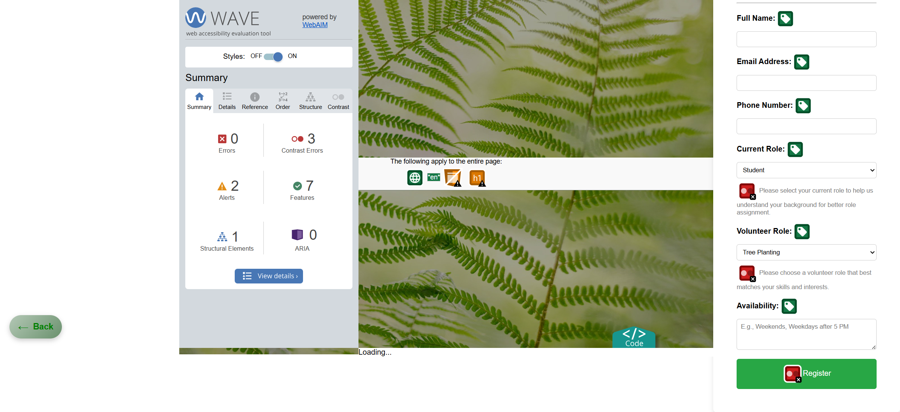

Home Page
Technical Description
Navigation Bar:
Fixed at the top with links to different pages: Home, Volunteer, Table, Profile, Feedback, Sitemap, and About Us.
Informative Sections:
Two sections:
"NEWS" with an external news link.
"THINGS TO DO" linking to a page with practical steps for sustainability.
Flip Cards:
Interactive cards display environmental threats: Deforestation, Pollution, Desertification, and Illegal Wildlife Trade.
Footer:
Team members' names with links to individual pages.
Accessibility
1. A fixed navigation bar ensures users can quickly switch between pages without scrolling
2. Smooth hover effects & color transitions make interactions intuitive.
3. "Our Vision" & "Our Mission" buttons provide clear next steps for users.
4. Flip-card animations highlight important environmental threats in an engaging way
5. The layout adapts to different screen sizes, ensuring a great experience on mobile & desktop.

Link to the validation page
Link to the page
Table Page
Technical Description
Displays environmental projects in a structured table.
- Fixed navigation bar (same as Home).
- Interactive table with alternating row colors.
- Tooltips on headers for additional info.
- External links for more project details.
- Animated underline effect for section title.
Accessibility
1. The table format presents environmental projects in a well-organized way.
2. Alternating row colors improve readability.
3. Tooltips on headers provide extra details without cluttering the interface.
4. Hyperlinks to external sources allow users to explore further.
5. Uses the same navigation bar as the Home page for a familiar and seamless experience.
6. Animated underline effect on section titles makes the page visually appealing.
Link to the validation page
Link to the page
Content Page
Technical Description
provides a structured and visually appealing webpage that explores different natural landscapes—Forests, Mountains, Deserts, and Waterfalls. It follows a well-organized structure, interactive navigation, and responsive design elements to ensure a seamless user experience.
Accessibility
1. Easy-to-Use Navigation
2. Visually Engaging Layout
3. Smooth Scrolling Effect

Link to the validation page
Link to the page
Volunteer Register
Technical Description
This Volunteer Registration page is designed with HTML, CSS, and JavaScript, offering a user-friendly and interactive form for users to sign up as volunteers. It ensures a visually appealing, structured, and responsive layout with a background image, dropdown selections, tooltips, and a dynamic thank-you message after form submission.
Accessibility
Link to the page
Compliance
Accessibility Compliance: The website follows accessibility standards by incorporating proper HTML semantic elements such as header, nav, main, and section, ensuring that the content is accessible to screen readers.
References
- United Nations (n.d.) Sustainable Development Goal 15: Life on Land. Available at: https://sdgs.un.org/goals/goal15 (Last accessed: 9 Mar 2025).
- Intergovernmental Science-Policy Platform on Biodiversity and Ecosystem Services (2019) Global Assessment Report on Biodiversity and Ecosystem Services. Available at: https://ipbes.net/global-assessment (Last accessed: 9 Mar 2025).
- The Guardian (2024) Land degradation expanding by 1m sq km a year, study shows. Available at: https://www.theguardian.com/environment/2024/dec/01/land-degradation-expanding-by-1m-sq-km-a-year-study-shows (Last accessed: 9 Mar 2025).
- Reuters (2024) Can the bioeconomy help save the Amazon from deforestation? Available at: https://www.reuters.com/sustainability/land-use-biodiversity/can-bioeconomy-help-save-amazon-deforestation-2024-12-18/ (Last accessed: 9 Mar 2025).